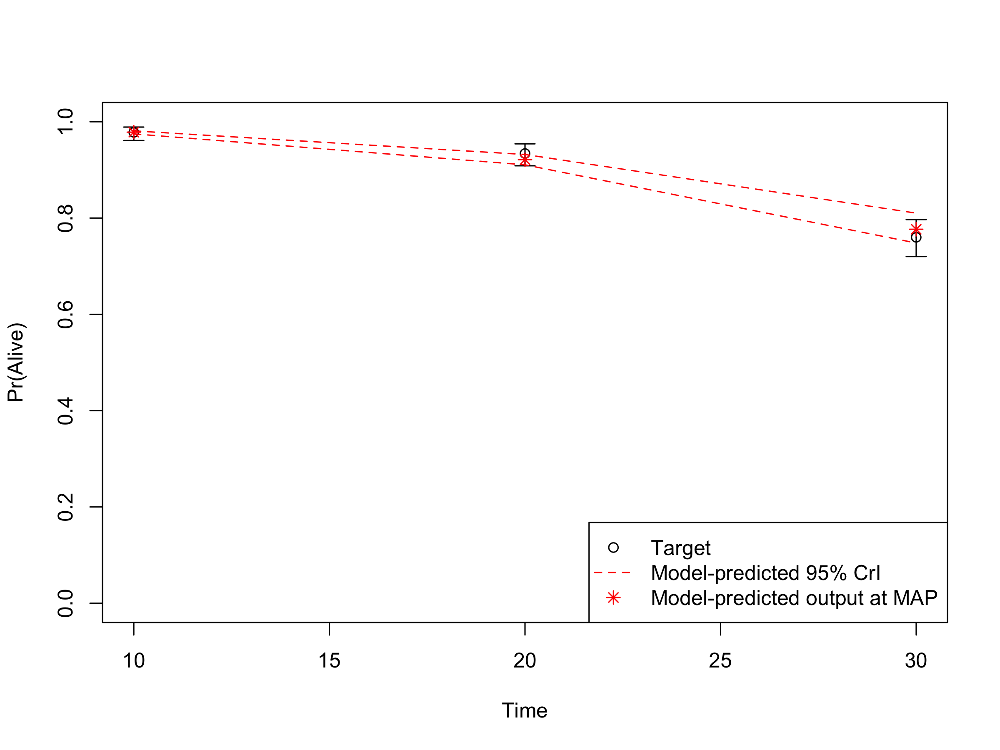
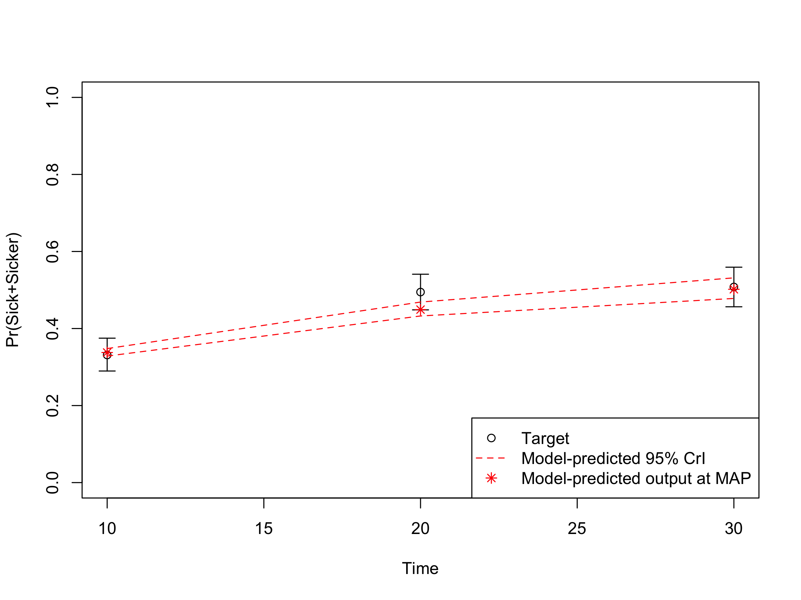
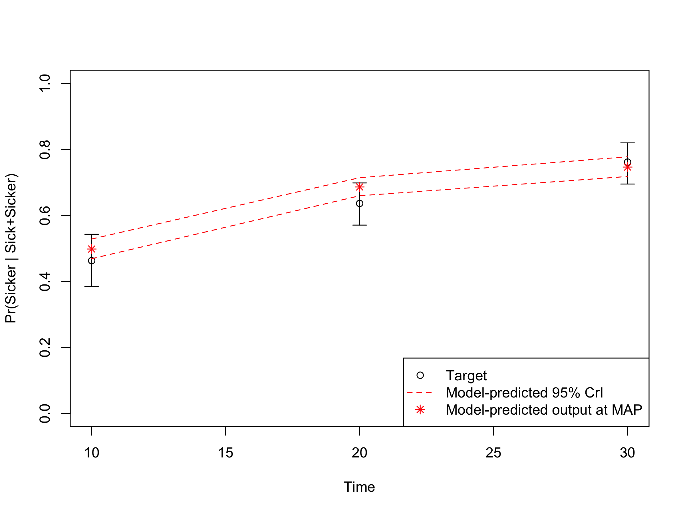

Model validation is performed to determine “whether a model is sufficiently credible, accurate, and reliable to be used for its intended applications”(Alarid-escudero, Gulati, and Rutter 2019)
In this fourth component, we internally validated the calibrated model by comparing the predicted outputs from the model evaluated at the calibrated parameters against the calibration targets Oberkampf, Trucano, and Hirsch (2004). It is important to check the internal validity of our Sick-Sicker model before we move on to the analysis components. To internally validate the Sick-Sicker model, we compare the model-predicted output evaluated at posterior parameters against the calibration targets. This is all done in the 04_validation.R script in the analysis folder.
In section 04.2 Compute model-predicted outputs, we compute the model-predicted outputs for each sample of posterior distribution as well as for the MAP estimate. We then use the function data_summary to summarize the model-predicted posterior outputs into different summary statistics.
print.function(data_summary)
#> function (data, varname, groupnames)
#> {
#> summary_func <- function(x, col) {
#> c(mean = mean(x[[col]], na.rm = TRUE), median = quantile(x[[col]],
#> probs = 0.5, names = FALSE), sd = sd(x[[col]], na.rm = TRUE),
#> lb = quantile(x[[col]], probs = 0.025, names = FALSE),
#> ub = quantile(x[[col]], probs = 0.975, names = FALSE))
#> }
#> data_sum <- plyr::ddply(data, groupnames, .fun = summary_func,
#> varname)
#> data_sum <- plyr::rename(data_sum, c(mean = varname))
#> return(data_sum)
#> }
#> <bytecode: 0x111636180>
#> <environment: namespace:darthpack>This function is informed by three arguments, data, varname and groupnames.
The computation of the model-predicted outputs using the MAP estimate is done by inserting the v_calib_post_map data into the previously described calibration_out function. This function creates a list including the estimated values for survival, prevalence and the proportion of sicker individuals at cycles 10, 20 and 30.
In sections 04.6 Internal validation: Model-predicted outputs vs. targets, we check the internal validation by plotting the model-predicted outputs against the calibration targets (Figures 1.1-1.3). The generated plots are saved as .png files in the figs folder. These files can be used in reports without the need of re-running the code.

Figure 1.1: Survival data: Model-predicted outputs vs targets.

Figure 1.2: Prevalence data of sick individuals: Model-predicted output vs targets.

Figure 1.3: Proportion who are Sicker, among all those afflicted (Sick + Sicker): Model-predicted output.